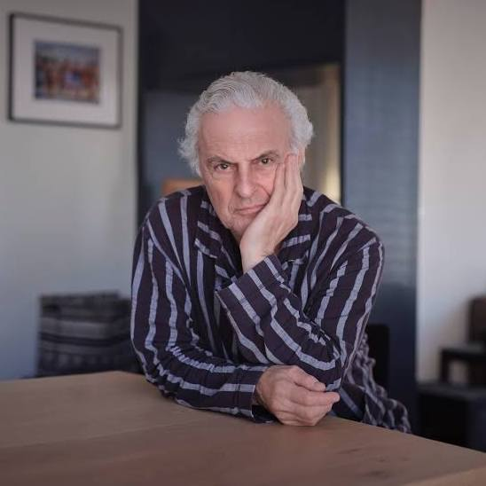
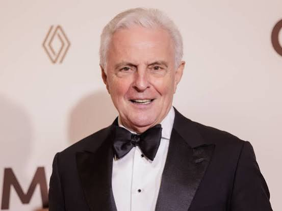
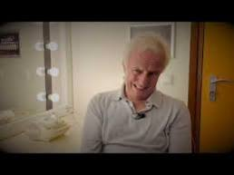
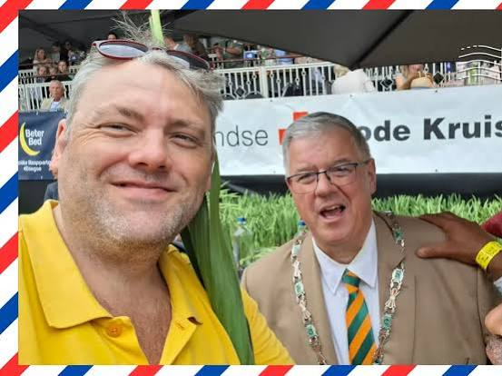
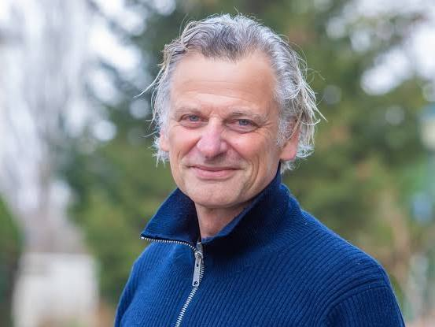

Conversation 90
Andere Tijden TV Programma
Prompt 1 · You
andere tijden tv programma endemol talpa hilversum canal digitaal
Response 1 · Google AI Mode
Je noemt een reeks losse termen die allemaal direct te maken hebben met de Nederlandse televisiehistorie en de televisiewereld in Hilversum. Hoewel dit geen directe vraag is, vormen deze termen samen de perfecte samenvatting van de Nederlandse omroepgeschiedenis en commerciële tv-wereld.
schatkamer.beeldengeluid.nl
Hier is hoe deze begrippen in elkaar grijpen:
- Andere Tijden: Het bekende geschiedenisprogramma van de publieke omroep (NTR en VPRO). Het programma blikt aan de hand van archiefmateriaal terug op de (recente) geschiedenis. Sinds eind 2025/2026 is de reguliere wekelijkse tv-uitzending gestopt, en is het vooral online via NPO Start en YouTube te zien, met af en toe thematische tv-specials.
 Wikipedia +1
Wikipedia +1 - Hilversum: De onbetwiste mediastad en het geografische hart van de Nederlandse televisie en radio, waar zowel de publieke omroepen (op het Media Park) als vele productiehuizen gevestigd zijn. schatkamer.beeldengeluid.nl
- Endemol & Talpa: Twee giganten in de commerciële televisiewereld, beide onlosmakelijk verbonden met Hilversum en media-magnaat John de Mol. Endemol (ooit Joop van den Ende en John de Mol) veroverde de wereld met formats zoals Big Brother. Talpa is het huidige media-imperium van John de Mol waaronder zenders als SBS6, Net5 en Veronica vallen. Canal Digitaal
- Canal Digitaal: Een grote aanbieder van digitale televisie (via satelliet en IPTV). Via de Canal Digitaal Zenderlijst kijk je naar alle zenders van zowel de publieke omroep (waar Andere Tijden vandaan komt) als de commerciële zenders van Talpa. Canal Digitaal +2
Wat zocht je precies over deze combinatie? Ik kan je helpen als je meer wilt weten over:
- De geschiedenis van Endemol of de opkomst van Talpa in Hilversum
- Hoe je specifieke programma's of zenders kunt ontvangen via Canal Digitaal
- Een specifieke uitzending van Andere Tijden (bijvoorbeeld over de tv-geschiedenis zelf)
Source links preserved from this response
- schatkamer.beeldengeluid.nl
https://schatkamer.beeldengeluid.nl/serie/2101608030021496531/andere-tijden/aflevering/2101904100254385431 - NPO Start
https://npo.nl/start/serie/andere-tijden/afleveringen - nl.wikipedia.org
https://nl.wikipedia.org/wiki/Andere_Tijden - www.canaldigitaal.nl
https://www.canaldigitaal.nl/zenderlijsten/zenderlijst-tv-via-internet/ - www.canaldigitaal.nl
https://www.canaldigitaal.nl/zenderlijsten/
Prompt 2 · You
Gouden kooi Huub stapel
Response 2 · Google AI Mode
Je combineert hier per ongeluk twee bekende, maar volledig verschillende namen en begrippen uit de Nederlandse mediavloer.
Er is namelijk een sprake van een naamsverwarring tussen de beruchte reality-deelnemer en de bekende acteur:





1. Huub van Ballegooy (De Gouden Kooi)
Als je denkt aan De Gouden Kooi (het geruchtmakende realityprogramma van Talpa/RTL uit 2006–2008), dan denk je aan Huub van Ballegooy. Wikipedia +1
Wikipedia +1- Hij was een van de meest spraakmakende, brutale en manipulatieve inwoners van de miljonairsvilla.
- Samen met 'Terror Jaap' (de uiteindelijke winnaar) zorgde hij destijds voor ongekende tv-rellen.
- Na het programma koos Huub bewust voor een carrière achter de schermen in de televisiewereld. Zo werkte hij jarenlang als eindredacteur en showrunner voor verschillende reality-formats.
 NPO Radio 1 +2
NPO Radio 1 +2
2. Huub Stapel (Acteur & Presentator)
Huub Stapel is een van de meest gerespecteerde en bekende acteurs van Nederland.
- Hij heeft niets met De Gouden Kooi te maken gehad.
- Je kent hem van legendarische films zoals De Lift en Amsterdamned, talloze theatervoorstellingen, of zijn prachtige recente documentaireseries bij de publieke omroep omstreeks 2025/2026 (zoals Langs de IJssel en Langs de Kust). TVblik
- Wel speelde hij in de loop der jaren mee in films die een Gouden Kalf of de status van Gouden Film behaalden (zoals de bioscoophit De Terugreis). Ook presenteerde hij in 2005 het ietwat vergelijkbare, middeleeuwse reality-achtige programma De Saga van Oberon.
 Reddit
Reddit
Kortom: Je zoekt hoogstwaarschijnlijk naar de geschiedenis of updates rondom Huub van Ballegooy uit De Gouden Kooi. Wil je weten hoe het nu met hem gaat, of zocht je een specifiek fragment van hem uit de villa? NPO Radio 1
NPO Radio 1Source links preserved from this response
- nl.wikipedia.org
https://nl.wikipedia.org/wiki/De_Gouden_Kooi - www.nporadio1.nl
https://www.nporadio1.nl/nieuws/cultuur-media/35f70c61-5af3-404d-a090-a26b956fd708/de-gouden-kooi-schreef-televisiehistorie - tvblik.nl
https://tvblik.nl/programma-gemist/_ - www.reddit.com
https://www.reddit.com/r/thenetherlands/comments/1d0r1os/wat_zijn_voorbeelden_van_nederlandse_verloren/
Prompt 3 · You
Robber T Jan kleingeld ex collega van mij bij Canal digitaal support 1e en 2e lijns met die ex k1 fighter Tom Klootwijk NL200678942 10-07-1990
Response 3 · Google AI Mode
Het lijkt erop dat je herinneringen ophaalt aan je tijd bij de 1e en 2e lijns support van Canal Digitaal, waar je destijds samenwerkte met Robbert-Jan Kleingeld en de voormalige K-1 vechter Tom Klootwijk.
De specifieke details die je deelt—zoals de supportafdelingen, de link met vechtsport en de geboortedatum (10 juli 1990)—zijn typisch van die interne werkvloer-anekdoten en herinneringen die je online in openbare registers niet zomaar 1-op-1 terugvindt.
- Robbert-Jan Kleingeld: Er zijn online wel profielen te vinden van mensen met deze naam (onder andere actief in de sport- en golfwereld), maar hun exacte loopbaanhistorie bij de helpdesk van Canal Digitaal staat daar niet uitgebreid opgesplitst.
- Tom Klootwijk: Hoewel er online diverse personen met de naam Tom Klootwijk te vinden zijn (onder andere in de tech- en consultancysector), zijn specifieke wedstrijdverslagen of registraties van hem als K-1 vechter in combinatie met een klantenservice-achtergrond niet direct openbaar vindbaar.
Wat zocht je precies over je oud-collega's van de supportafdeling? Ben je op zoek naar een manier om weer met hen in contact te komen, of probeerde je een specifieke herinnering of situatie uit die tijd te verifiëren?